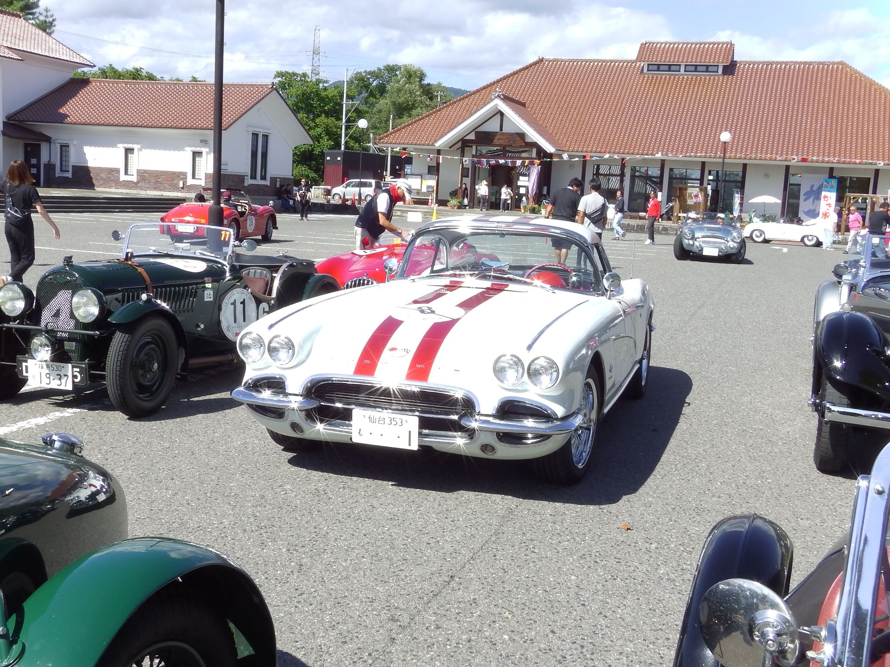

OUR STORY
美しい車には、
美しい時間が似合う。
Seven Forest Classicは、クラシックカーのPC競技を中心に活動する仲間たちの集まりです。走る技術を磨き、車の魅力を語り、福島・東北の風景をともに楽しむ。その一瞬一瞬を大切にしています。
Seven Forestについて
01 / SEVEN FOREST CLASSIC
OUR STORY
Seven Forest Classicは、クラシックカーのPC競技を中心に活動する仲間たちの集まりです。走る技術を磨き、車の魅力を語り、福島・東北の風景をともに楽しむ。その一瞬一瞬を大切にしています。
Seven Forestについて
MOMENTS